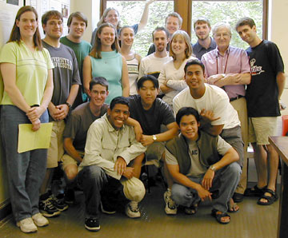

Crystal Austin, (U of MN, TC), worked under the direction of Prof. Cushman on a systematic study of the effects of intense radiation on the effectiveness of HPD’s (Hybrid Phota Diodes). These devices are to be used instead of conventional photomultiplier tubes in a future experiment.
Nathaniel Baish, (U of MN, TC), worked in Professor Halley's laboratory on an experiment to analyze Bose-Einstein Condensation through a thin slab of superfluid Helium four. He assisted in operating and maintaining a complex apparatus.
Han Ban, (Pomona College), worked in the laboratory of Prof. Crowell studying the Magneto Optic Kerr effect an assisted in the design of a "Kerr Microscope."
Krista Benz, (Duke University),worked under the direction of Prof. Heller on the physics education project. She examined possible correlations of physics knowledge as reflected in physics-problem solutions, conceptual tests, and laboratory reports submitted by students.
John Buncher, (U of MN, Morris), under the direction of Dr. Mualem worked on detector design using scintillators and fiber optics in the off-axis detector for MINOS.
Luke Corwin, (U of MN, TC), worked under the guidance of Prof. Urheim on developing a data analysis system for an experiment using the CLEO detector at the CESR facility of Cornell University. He plans to use the results of his work on his senior thesis.
Aneel Damle, (Washington University), worked in the laboratory of Prof. Mueller studying photo-bleaching in microdroplets for fluorescent microscopy in biophysics.
Susan Dorsher, (MIT), worked under the guidance of Dr. Nelson where she prepared computer programs to be used to calibrate the magnetic field in the toroidal MINOS detector.
Marty Findley (University of South Florida), worked on "Quasi-Exactly Solvable Problems in Quantum Mechanics," a project provided for him by Prof. Shifman.
Kevin Gutierrez, (University of Northern Colorado), worked under the direction of Prof. Wygant on the analysis of data from the NASA POLAR spacecraft concerning the structure and dynamics electric fields and plasma during geomagnetic storms.
Justin Johnson, (U of MN, TC), worked under the supervision of Prof. Marshak analysing data from the Soudan 2 detector to establish the effects of "Moon Shadow."
Shaela Jones, (Univ. of Florida), worked under the supervision of Prof. Cattell on waves in space-plasma at the bow shock and the magnetopause.
Matthew Luzum, (St. Johns Univ.), did data analysis and performed occasional maintenance tasks on the CDMS (Cold Dark Matter Search) project under Prof. Cushman.
Aaron McGowan, (Cornell Univ.), worked with Dr. Border in designing detector electronics and optics for the MINOS off-axis detector.
Paul Messman, (Univ. of Wisc., Stevens Point), worked in the laboratory of Prof. Huang on aspects of surface tension of liquid crystals. He was accompanied by his professor from the University of Wisconsin who had support for a summer project in this lab.
Eliot Petersen, (U of MN, TC), worked for Prof. Cattell on determining structure of the Aurora, correlating data from a ground-based all-sky camera with data from the FAST satellite which provides electron, ion, and electric and magnetic field readings.
Thongphanh Phanthavady, (Albertson College), worked in the laboratory of Prof. Goldman. He spent most of his time determining temperature dependence of the magnetization of numerous samples of V3Si samples.
David Rojas, (Northwestern Univ.), worked in the laboratory of Prof. Kakalios preparing computer-simulations of segregation phenomena in granular matter.
Joaquin Santana, (Stony Brook Univ.), worked under Prof. Jones on data reduction produced by an imaging polarimeter of comets.
Ashley Wiren, (Sonoma State Univ.), worked under the supervision of Prof. Gehrz on infrared imaging data from the M33 galaxy.